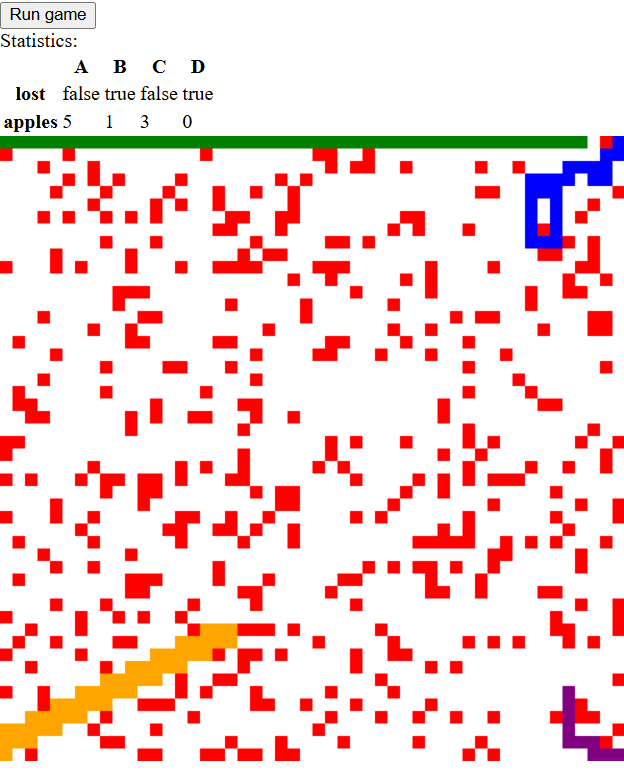

My Projects
Worked as part of a four-member team to classify MRI scans into
four stages of Alzheimer’s disease using CNN and MLP models,
comparing performance to demonstrate CNN advantages in image
classification. We created two models, a basic Multi-Layer
Perceptron (MLP), and a Convolutional Neural Network (CNN), with
the understanding that the MLP will be outclassed by the CNN. We
utilized a dataset of 6400 MRI scans, applying data augmentation
techniques to enhance model performance. The CNN model achieved an
accuracy of 85%, outperforming the MLP’s 70%, highlighting the
effectiveness of CNNs in medical image analysis.
Developed a 4-player AI-controlled Snake game where each player
programs an AI agent to navigate a 5x5 local view of the board.
Implemented agents in TypeScript using custom strategies to
maximize apple collection while avoiding collisions. Designed the
game to support multiple AI agents competing simultaneously, with
the same agent code reusable across snakes. Enabled referees to
integrate and test agents in different matches, ensuring fair
competition and observing diverse AI behaviors.

A Python-based text adventure where the player takes on the role
of Oceanus, an underwater explorer. The game guides you through a
dynamic world of sea creatures, including friendly merfolk,
dangerous sea serpents, and cunning jellyfish. Players collect
keys and items to progress toward the Lost City of Areadon while
managing health, inventory, and resources. The inventory is
efficiently organized using a Red-Black Tree, and the game
features turn-based combat, strategic decision-making, and random
encounters that influence gameplay.
Flowmind is an iOS productivity and task-management app designed
to help users with ADHD organize their thoughts and reduce
cognitive overload. The app supports features such as easy task
creation, categorization, and management. As part of a six-person
development team, I contributed to full-stack development,
implementing user authentication, ensuring data persistence, and
overall building a reliable productivity tool. The app is
currently in development, with a public release planned soon.